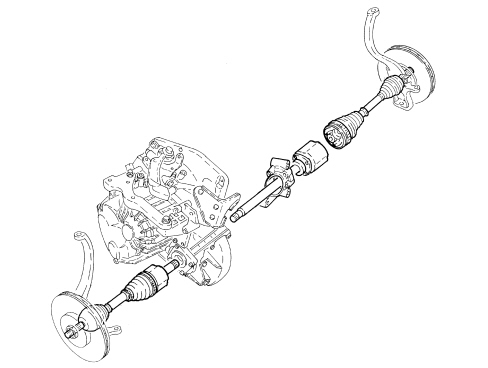

INTRODUCTION - REAR AXLE
- Path
- Descriptions > 27 AXLE > INTRODUCTION - REAR AXLE
- Kind
- system description
- Applies to
- engines: 1.9 JTS, 2.2 JTS, 1.9 JTD 8V, 1.9 JTD 16V, 2.4 JTD 20V; all production periods
- Interactive page
- https://sloeber94.github.io/elrnDB/alfa/159/en/#/939003518
Applies to: engines: 1.9 JTS, 2.2 JTS, 1.9 JTD 8V, 1.9 JTD 16V, 2.4 JTD 20V; all production periods
SPECIFICATIONS
The drive shafts, constant velocity joints and intermediate drive shaft that make up the transmission assembly transmit motion from the gearbox to the drive wheels.

The transmission features wheel side constant velocity joints and one gearbox side constant velociy joint known as a "TOULIP". The opposing drive shaft features a constant velocity joint with an intermediate drive shaft.
The intermediate drive shaft transmits drive to the right drive shaft, which is the same as the left.
This solution allows drive torque to be distributed in perfectly symmetrical manner over both wheels.
This prevents the longer drive shaft from curving due to bending induced bythe transmitted drive torque, which could cause changes in the vehicle's dynamic attitude.